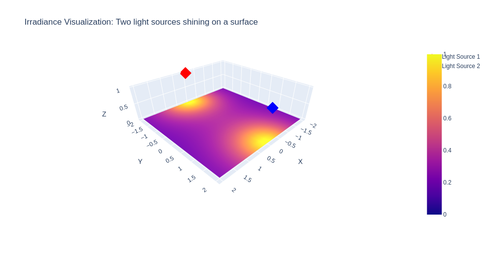
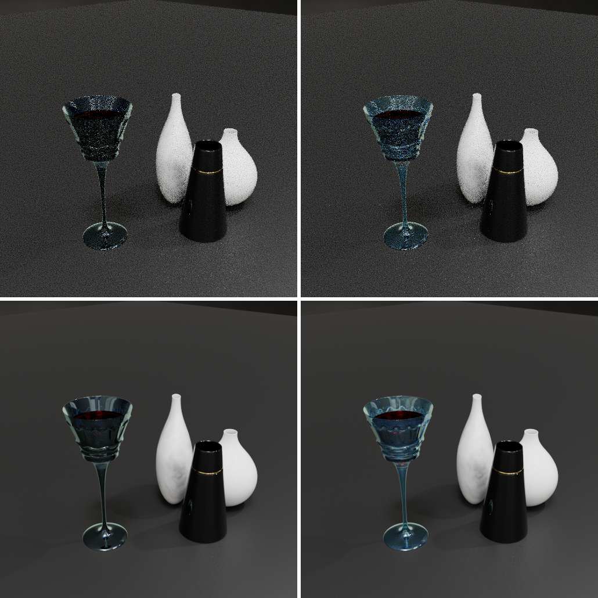

**Computer Graphics Summary**
Welcome to the Computer Graphics course summary! This guide provides an intuitive, high-level overview of the key concepts discussed in the Computer Graphics course taught by Prof. Dr. M. Gross & Dr. Marios Papas at ETH Zurich 2024 (https://cgl.ethz.ch/teaching/cg24/home.php).
This summary was created by [Sven Pfiffner](https://github.com/SvenPfiffner) to prepare for the final exam and made available to the public with the hope that it will be useful to others. If you find any errors or have suggestions for improvement, please feel free to open an issue or pull request on the [GitHub repository](https://github.com/SvenPfiffner/ComputerGraphicsSummary). Please note that this page closely follows the material taught during the course and all credit for the underlying theory goes to Prof. Dr. M. Gross, Dr. Marios Papas, their team and the ETH Zurich.
Quantities of light
==============================================================
## Flux
is a measure of how much light passes through a surface (or boundary) in a given amount of time. Imagine a bounding sphere around a lightbulb that emits equally in all directions. The light that passes through the sphere is the flux. We formalize flux as
$$
\Phi(A) \; \; \left[ \frac{J}{s} = W \right]
$$
## Irradiance
is a measure of how much power from light is recieved per unit area. Think of sunlight hitting your skin.
- If you stand in direct sunlight, you feel more warmth because more light energy is hitting your skin per second $\rightarrow$ higher irradiance.
- If you stand in the shade, you feel less warmth because less light energy is hitting your skin per second $\rightarrow$ lower irradiance.
- If you use a magnifying glass to focus sunlight on your skin, you feel a burning sensation because the light energy is concentrated on a smaller area $\rightarrow$ higher irradiance.
As irradiance is a measure of power per unit area, it essentially breaks down to flux per unit area and can thus be formalized as
$$
E(x) = \frac{d\Phi(A)}{dA} \; \; \left[ \frac{W}{m^2} \right]
$$

## Radiosity
is a measure of how much power is emitted by a surface per unit area. As this is the inverse of irradiance, its formalization is equivalent. Think of a lightbulb emitting light in all directions. The radiosity is the power emitted by the lightbulb per unit area of the lightbulb's surface. We have
$$
B(x) = \frac{d\Phi(A)}{dA} \; \; \left[ \frac{W}{m^2} \right]
$$
## Radiant Intensity
is a measure of how much light is emitted in a given direction. It is the flux emitted by a light source per unit solid angle. It tells us how focused or spread out the light is. Think of the following example
- The sun emits a huge amount of power (flux), but it spreads in all directions, so the radiant intensity is moderate.
- A laser pointer emits a small amount of power, but it is focused in a very narrow beam, so the radiant intensity is high.
We have
$$
I(\omega) = \frac{d\Phi(\omega)}{d\omega} \; \; \left[ \frac{W}{sr} \right]
$$
where $\omega$ is the solid angle of the beam.
## Radiance
measures how much light travels in a specific direction from a specific surface area. It is the most fundamental quantity in computer graphics as it directly corresponds to what our eyes and cameras percieve as brightness. Think of the following
- If you look directly into a flashlight, it appears very bright (high radiance).
- If you look atht the beam from the side, it appears dimmer (lower radiance).
- The flashlight still emits the same amount of light (flux does not change), but its brightness depends on the viewing angle.
In other words, the radiance is radiant intensity weighted by the cosine of the angle between the direction of the light and the normal of the surface. We have
$$
L(x, \omega) = \frac{d^2\Phi(\omega)}{dA \cdot d\omega \cdot \cos(\theta)} \; \; \left[ \frac{W}{m^2 \cdot sr} \right]
$$
where $\theta$ is the angle between the normal of the surface and the direction of the light.
Lamberts Cosine Law
==============================================================
Lamberts Cosine Law is a fundamental prinziple in computer graphics. It describes how light interacts with diffuse surfaces, which reflect light evenly in all directions.
The brightness of a surface depends not only on the insensity of the light source but also on the angle at which the light hits the surface.
- When light strikes a surface perpendicularly, it appears brightest.
- When light hits at an angle, it spreads out over a larger area, making each small part of the surface recieve less light.
- When light is at a grazing angle, the surface recieves very little light, making it appear darker.
Shape Representation
==============================================================
## Parametric Representation
Imagine you are drawing a curve on a piece of paper. One way to describe this curve is by listing a series of points $(x,y)$ that make up the curve. But what if you could describe the whole curve using just a single equation? This is where **parametric representations** come in.
Instead of directly describing the curve as $y = f(x)$, we introduce an extra variable - let's call it $t$ (a parameter) - and define both $x$ and $y$ in terms of $t$:
$$
x = x(t), y = y(t)
$$
As $t$ changes, it traces out the curve. Think of $t$ as a slider that moves along the curve, generating points.
In 3D, we can extend the idea further by using two parameters, $u$ and $v$, to define a **surface**:
$$
x = x(u,v), y = y(u,v), z = z(u,v)
$$
**Parametric Circle** is represented by the formula:
$$
p(t) = r(\cos(t), \sin(t)) \; \; t \in [0, 2\pi]
$$
**Parametric Sphere** is represented by the formula:
$$
p(u,v) = r(\cos(u)\cos(v), \sin(u)\cos(v), \sin(v)) \\
(u,v) \in [0, 2\pi] \times [\frac{-\pi}{2}, \frac{\pi}{2}]
$$
## Implicit Representation
Imagine you're trying to describe a circle on a piece of paper. One way is using the equation:
$$
x^2 + y^2 = r^2
$$
This equation doesn't give you individual points like parametric equations do. Instead, it defines a condition: any point $(x,y)$ that satisfies this equation lies on the circle.
This is the essence of implicit representations - instead of describing how to move along a shape, we describe a rule that points must follow.
**Implicit Circle** is represented by the formula:
$$
f(x,y) = x^2 + y^2 - r^2 = 0
$$
**Implicit Sphere** is represented by the formula:
$$
f(x,y,z) = x^2 + y^2 + z^2 - r^2 = 0
$$
## Constructive Solid Geometry (CSG)
CSG is a technique for combining simple shapes to create more complex ones. It's like building with Lego blocks - you start with basic shapes and combine them in different ways to create more intricate structures. Given shapes in
implicit form, we can combine their representative functions using boolean set operations to create new shapes. Remember that a shapes boundary is represented by the points that evaluate to zero under its implicit function. Points inside of a shape evaluate to $<0$ and points outside to $>0$. We
can therefore model the following set operations:
- **Union**: Combine two shapes by taking the minimum of their functions.
$$
f_{\text{union}}(x) = \min(f_1(x), f_2(x))
$$
- **Intersection**: Combine two shapes by taking the maximum of their functions.
$$
f_{\text{intersection}}(x) = \max(f_1(x), f_2(x))
$$
- **Difference**: Subtract one shape from another by taking the maximum of the first and the negative of the second.
$$
f_{\text{difference}}(x) = \max(f_1(x), -f_2(x))
$$
Polygonal Meshes
==============================================================
## Manifolds
A manifold in the context of polygonal meshes is a surface that locally resembles a Euclidean space, meaning every small region around a point on the surface behaves like a flat plane or a half-plane. This concept is fundamental in geometric modeling and computer graphics,
as it ensures that a 3D model has well-defined and predictable surface properties.
A $2$-manifold is a surface where every point has a neighborhood that is homeomorphic to a disk. In simpler terms, if you zoom into any point on the surface, it should look like a flat plane. This means that the surface is continuous and has no holes or self-intersections.
We characterize a mesh with the following types of manifolds:
- **Closed Manifold**: Every edge in the mesh is shared by exactly two faces. This means that the mesh ecloses a volume (it is watertight) and has no boundary. An example would be a sphere or torus.
- **Manifold with boundary**: Every edge is shared by either one or two faces. Edges that are shared by only one face form a boundary loop. An example would be an open cylinder or a disk.
- **Non-Manifold**: There are edges that are shared by more than two faces. This leads to vertices that are connected in a way that does not create a locally flat surface. In other words, a non-manifold mesh represents geometry that can not exist in the real 3D space. Non manifold meshes should be avoided in practice as they can be problemaic for various usecases like
- Rendering
- Fluid simulation
- Boolean operations
- 3D printing
## Mesh Triangulation
Triangulation is the process of dividing a polygon into triangles. This is important because many algorithms and rendering techniques work with triangles as the basic building block. Triangles are simple to work with and have nice properties like being planar and convex. Further, they always contain exactly 3 vertices and 3 edges, simplifying storage.
Appearance Modelling
==============================================================
Appearance modeling is about how objects look when light interacts with them. It helps create realistic digital images by defining how materials reflect, absorb, or scatter light.
## BRDF
A BRDF (Bidirectional Reflectance Distribution Function) is a mathematical function that describes how light is reflected at an opaque surface. The **reflection equation** is given by
$$
\int_{H^2} f_r(x, \omega_i, \omega_o) \cos(\theta_i) d\omega_i = L_o(x, \omega_o)
$$
Intuitively the reflection equation states that the light reflected in a specific direction $\omega_o$ from a point $x$ on a surface is the sum of the light reflected from all incoming directions $\omega_i$ weighted by the BRDF and the cosine of the angle between the normal of the surface and the incoming light. The integration volume $H^2$ is a hemisphere, thereby capturing all possible directions of incoming light above the surface.
## Lambertian Diffuse BRDF
The Lambertian BRDF is the simplest BRDF model and is used to describe perfectly diffuse surfaces. A lambertian reflection is isotropic, meaning it reflects light equally in all directions (the BRDF function is constant).
We can deduce
\begin{equation}
\begin{split}
L_o(x, \omega_o) &= \int_{H^2} f_r(x, \omega_i, \omega_o) \cos(\theta_i) d\omega_i \\
& = \int_{H^2} f_r \cos(\theta_i) d\omega_i\\
& = f_r \int_{H^2} \cos(\theta_i) d\omega_i\\
& = f_r E(x)
\end{split}
\end{equation}
## Ideal Specular Reflection
An ideal specular reflection can be understood intuitively by thinking about a perfect mirror. Imagine light rays hitting a perfect, smooth surface (like a mirror). These rays reflect off the surface in a single, well-defined direction, following **Snell's Law**:
$$
\theta_i = \theta_r
$$
which means that the **angle of incidence** $\theta_i$ is equal to the **angle of reflection** $\theta_r$. Since the surface is perfectly smooth, all rays that come in at a given angle will reflect in exactly the same direction, creating a sharp, clear reflection (in particular, there is no scattering).
## Ideal Specular Refraction
Now imagine you are looking at a straw in a glass of water. The straw appears bent at the water's surface, even though it's actually straight. This bending effect happens because light changes direction when it moves from one medium to another
(like from air to water). In **ideal specular refraction**, light passes through a perfectly smooth and transparent surface (like glass or water) without scattering. Instead, it follows Snell's Law, which dictates how much the light bends. We have:
$$
\eta_1 \sin(\theta_i) = \eta_2 \sin(\theta_t)
$$
where $\eta_1$ and $\eta_2$ are the refractive indices of the two media, $\theta_i$ is the angle of incidence, and $\theta_t$ is the angle of transmission.
## Microfacet BRDF
Imagine looking at a rough, shiny surface like a frosted glass tabletop, brushed metal, or even human skin. The surface isn't a perfect mirror, but it still reflects light in a way that creates glossy highlights instead of a sharp, clear reflection.
This happens because, at a microscopic level, the surface is made up of tiny facets - hence the term microfacet. Each of these microfacets are either specular or diffuse, but because they are oriented in many different directions, the overall reflections and refractions become more complex.
Let
$$
\omega_h = \frac{\omega_i + \omega_o}{||\omega_i + \omega_o||}
$$
be the so called **halfway vector** between the incoming and outgoing light directions. It is the direction in which the microfacets are oriented (the direction a perfect specular reflection would point towards). The microfacet reflection equation starts from the general BRDF definition
$$
f_r(\omega_i, \omega_o) = \frac{\text{Reflected Radiance}}{\text{Incoming Irradiance}}
$$
for the microfacet model, this becomes
$$
f_r(\omega_i, \omega_o) = \frac{\text{Energy reflected by microfacets oriented along }h}{\text{Incoming energy per unit area}}
$$
Since only facets aligned with the halfway vector $h$ contribute to the reflection, we can introduce the **microfacet distribution function** $D(h)$, which tells us the fraction of microfacets that have their normal aligned with $h$.
Now note that some microfacets may block incoming or outgoing light due to self-shadowing and masking. We can model this by the function $G(\omega_i, \omega_o)$. Finally we introduce the fresnel function $F(\omega_i, h)$, which tells us how much light is reflected at the interface between two media. The microfacet BRDF is then given by
$$
f_r(\omega_i, \omega_o) = \frac{D(h) \cdot G(\omega_i, \omega_o) \cdot F(\omega_i, h)}{4 \cdot \cos(\theta_i) \cdot \cos(\theta_o)}
$$
where the denominator is a scaling factor to ensure energy conservation.
Sources of light
==============================================================
Light sources are objects in a scene that have the ability to emit light. They are essential for creating realistic and visually appealing computer graphics. Theoretically, any object that somehow emits light can be considered a light source. However, during the course, a variety of concrete examples were discussed.
## Point Light
A point light is like a tiny glowing dot in space - think of a light bulb or a distant star. It emits light equally in all directions, creating a spherical light spread. In computer graphics, point lights are useful for simulating small, localized light sources. Usually a point light is defined by a point in space $P$ and its emitted power (flux) $\Phi$.
As the point light is isotropic, the radiant intensity is constant in all directions (the power per unit solid angle is constant). We have
$$
I(\omega) = \frac{\Phi}{4\pi}
$$
Now consider the irradiance at a point $x$ due to the point light at $P$. We are at a distance of $r = ||x - P||$ from the light source and the power is spread over a sphere of area $4\pi r^2$. The irradiance is then given by
$$
E(x) = \frac{I}{||x - P||^2} = \frac{\Phi}{4\pi ||x - P||^2}
$$
The radiance at $x$ in the direction $\omega$ is then determined by the BRDF $f_r(x,p,\omega)$ and the already discussed cosine term to capture foreshortening. We have
\begin{equation}
\begin{split}
L_r(x, \omega) &= f_r(x,p,\omega) \cdot E(x) \cdot |\cos(\theta)| \\
&= f_r(x,p,\omega) \cdot \frac{\Phi}{4\pi ||x - P||^2} \cdot |\cos(\theta)|
\end{split}
\end{equation}
To account for shadows, we introduce a visibility function $V(x,p)$, which is $1$ if the point $x$ is visible from the light source $p$ and $0$ otherwise. This gives us the final radiance equation for a point light with:
$$
L_r(x, \omega) = V(x,p) \cdot f_r(x,p,\omega) \cdot \frac{\Phi}{4\pi ||x - P||^2} \cdot |\cos(\theta)|
$$
## Spot Light
A spot light is like a point light, but with a cone-shaped beam. It emits light in a specific direction, creating a focused, directional light spread. Spot lights are useful for simulating flashlights, car headlights, or stage lights. A spot light is defined by a point in space $P$, a direction $\omega_d$, a cutoff angle $\theta_c$, and a falloff exponent $n$. For the radiance of a spot light, we have
$$
L_r(x, \omega) = V(x,p) \cdot f_r(x,p,\omega) \cdot I(p,x) \cdot \frac{|cos(\theta)}{||x - p||^2}
$$
Thus, the radiance is almost the same as for a point light, with the exception that the isotropic intensity is replaced by a directional intensity $I(p,x)$, which is $0$ if the point $x$ is outside the cone of the spot light and decreases with the angle between the direction to $x$ and the direction of the spot light. The falloff exponent $n$ controls how quickly the intensity decreases with the angle.
There is a multitude of ways how this can be modeled and there can be different approaches to the falloff function.
## Directional Light
A directional light is like sunlight - it comes from a faraway source and hits everything with (theoretically almost but modeled that way) parallel rays. Unlike other lights, a directional light has no specific position, just a direction. The radiance of a directional light is determined by
the BRDF $f_r(x,p,\omega)$, a foreshortening term and the visibility function. As the radiosity of a directional light is constant along a certain direction, it is fully captured by a term $L_d(\omega)$ and we have
$$
L_r(x, \omega) = V(x,p) \cdot f_r(x,p,\omega) \cdot L_d(\omega) \cdot |\cos(\theta)|
$$
## Mesh Light
A mesh light is a polygonal mesh that emits light. It is a versatile light source that can be used to create complex lighting effects. Mesh lights are useful for simulating objects like glowing screens, neon signs, or even entire buildings. The principles of foreshortening, visibility, and BRDFs still apply, but the radiant intensity is now distributed over the surface of the mesh and may be different at different points on the surface.
Monte Carlo Integration
==============================================================
**Monte Carlo Integration** is a way to estimate an integral using random sampling. Instead of solving the integral mathematically, we take random points in a given region and check how many fall under the curve. As an intuitive example, imagine you want to find the area of an irregularly shaped pond. Instead of trying to measure it exactly, you throw a bunch of pebbles randomly over a large square that fully contains the pond. You then count how many pebbles land inside the pond versus the total pebbles thrown. Since you know the area of the square, you can estimate the ponds area using
$$
\text{Area of pond} = \frac{\text{Pebbles in pond}}{\text{Total pebbles}} \times \text{Area of square}
$$
Lets now see how we can extend this idea to estimate the integral of a function $f(x)$ over a domain $D$. That is we want to compute
$$
\int_D f(x) dx
$$
Instead of directly solving this integral (which quickly becomes infeasible for high-dimensional functions), the integral is rewritten in terms of a probability density function $p(x)$, which describes the distribution of random samples over the domain $D$. The function $f(x)$ is divided by $p(x)$ to ensure that the expectation remains unbiased.
$$
\int_D f(x) dx = \int_D \frac{f(x)}{p(x)} p(x) dx
$$
The integral is then approximated by the average of the function values at the random samples. The more samples we take, the more accurate the estimate becomes. The Monte Carlo estimate is given by
$$
\int_D f(x) dx \approx \frac{1}{N} \sum_{i=1}^{N} \frac{f(x_i)}{p(x_i)}
$$
Note that this formulation is the exact same thing as we did previously with the pebbles. The function $f(x)$ is the height of the curve, $p(x)$ is the probability of a pebble landing at $x$, and the sum is the total number of pebbles in the pond (or in this case, under the curve).
The monte carlo estimator is unbiased and converges to the true value of the integral as the number of samples $N$ goes to infinity. The drawback is its convergence rate, which is $\mathcal{O}(1/\sqrt{N})$. This means that the error of the estimate decreases with the square root of the number of samples. In other words, to halve the error, you need to quadruple the number of samples.
## Sampling arbitrary domain
In practice, we often want to estimate integrals over complex domains that are not easy to sample uniformly. However, random samples are in general given by a uniform distribution over the interval $[0,1]$. To sample a more complex domain, we can use the following method:
- We first sample $n$ random numbers $\xi_i \in [0,1]$, giving us a uniform sample in the unit hypercube with same dimension ($n$) as the target domain.
- We determine a probability density function $p(x)$ that describes the distribution of points in the target domain.
- Then, we choose a convenient parametrization of the target domain and relate the parametrization of the unit hypercube to the target domain via the jacobian method.
- Next, we compute the cumulative distribution function (CDF) of our target distribution
- We then invert the CDF to map the uniform sample to a sample from the target distribution.
- Finally, we use the mapped sample to estimate the integral.
This all sounds very abstract, so let's step through an example. Imagine we want to random sample a disk with radius $1$. Any point on that disk can be parametrized by two coordinates $(x,y)$. So our sample is two dimensional and we start with a two dimensional uniform sample $\xi = (\xi_1, \xi_2) \in [0,1]^2$. The disk has an area of $\pi$ so if we sample uniformly, each point in the disk has a probability of $\frac{1}{\pi}$ of being sampled.
this gives us
$$
p(x, y) = \begin{cases} \frac{1}{\pi} & \text{if } x^2 + y^2 \leq 1 \\ 0 & \text{otherwise} \end{cases}
$$
As we are working with a disk, a parametrization in polar coordinates would be more convenient. We can simply map
$$
x = r \cos(\theta) \quad y = r \sin(\theta)
$$
Relating uniform cartesian $x,y$ to polar $r, \theta$ coordinates requires sampling from
$$
p_p(r, \theta) = \frac{r}{\pi}
$$
This result was obtained by applying the jacobian method and is described in detail in the next section.
As a next step we need to compute the CDF functions for $r$ and $\theta$ and invert them to get the mapping from the uniform sample to the disk.
We have
\begin{equation}
\begin{split}
p(r) &= \int_0^{2\pi} p_p(r, \theta) d\theta \\
&= \int_0^{2\pi} \frac{r}{\pi} d\theta \\
&= \frac{r}{\pi} \int_0^{2\pi} d\theta \\
&= \frac{r}{\pi} \cdot 2\pi \\
&= 2r\\
P(r) &= \int_0^r 2r' dr' \\
&= r^2
\end{split}
\end{equation}
and
\begin{equation}
\begin{split}
p(\theta | r) &= \frac{p_p(r,\theta)}{p(r)} \\
&= \frac{r}{\pi} \cdot \frac{1}{2r} \\
&= \frac{1}{2\pi} \\
P(\theta | r) &= \int_0^{\theta} \frac{1}{2\pi} d\theta' \\
&= \frac{\theta}{2\pi}
\end{split}
\end{equation}
The inversion of the CDFs is then given by
$$
r = \sqrt{\xi_1} \quad \theta = 2\pi \xi_2
$$
and we can now sample the disk by mapping the uniform sample to the disk using these equations.
## Jacobian Method
The **Jacobian method** is a way to transform probability distributions when you change variables. It helps you correctly adjust probabilities when switching from one set of variables to another.
If you have a random variable $X$ with probability density function $p_X(x)$ and you want to transform it to a new random variable $Y = g(X)$,
then the probability density of $Y$, denoted $p_Y(y)$, is found using the Jacobian determinant. We have
$$
p_Y(y) = p_Y(T(x)) = \frac{p_X(x)}{|J_{T(x)}|}
$$
The intuition is as follows: the Jacobian determinant $|J_{T(x)}|$ tells you how much the volume changes when you switch from $X$ to $Y$. If the volume expands, the probability density decreases, and vice versa. Therefore, the jacobian adjusts the probability density to ensure the total probabiity remains $1$ after transformation.
To show this technique in practice, we can consider the change of variables from cartesian to polar coordinates as it was used in the previous section. We have
$$
x = r \cos(\theta) \quad y = r \sin(\theta)
$$
The jacobian matrix is then given by
$$
J_T(r,\theta) = \begin{bmatrix} \frac{\delta x}{\delta r} & \frac{\delta x}{\delta \theta} \\ \frac{\delta y}{\delta r} & \frac{\delta y}{\delta \theta} \end{bmatrix} = \begin{bmatrix} cos(\theta) & -r sin(\theta) \\ sin(\theta) & r cos(\theta) \end{bmatrix}
$$
Thus, the the volume of the probability distribution changes by
$$
|J_T(r,\theta)| = r(cos^2(\theta) + sin^2(\theta)) = r
$$
and adjusting $p_p(r,\theta)$ to $p_c(x,y)$ requires dividing by the jacobian determinant. So
$$
p_c(x, y) = \frac{p_p(r,\theta)}{|J_T(r,\theta)|}
$$
And therefore
$$
p_p(r, \theta) = r \cdot p_c(x, y) = \frac{r}{\pi}
$$
## Multiple Importance Sampling
When using Monte Carlo integration, variance is high when the PDF is not proportional to the integrand. This is because the samples are not distributed according to the integrand, leading to a high variance in the estimate. **Multiple Importance Sampling** is a technique to reduce this variance by combining multiple sampling strategies.
The idea behind **Multiple Importance Sampling** is that if at least one sampling strategy covers each part of the integrand well, then combining them should reduce artifacts in renders. We can combine strategies by weighting each strategy by weights that sum to one. For the case of two strategies this means
$$
\langle F^{N_1 + N_2} \rangle = \frac{1}{N_1} \sum_{i=1}^{N_1} \frac{f(x_i)}{p(x_i)} w_1(x_i) + \frac{1}{N_2} \sum_{i=1}^{N_2} \frac{f(x_i)}{p(x_i)} w_2(x_i)
$$
where $w_1(x_i)$ and $w_2(x_i)$ are the weights for the two strategies and sum to $1$.
The general case with $n$ strategies is given by
$$
\langle F^{N_1 + N_2 + \ldots + N_n} \rangle = \sum_{i=1}^{n} \frac{1}{N_i} \sum_{j=1}^{N_i} \frac{f(x_j)}{p(x_j)} w_i(x_j)
$$
with $\sum_{i=1}^{n} w_i(x_j) = 1$.
Direct Illumination
==============================================================
Direct illumination refers to the light that reaches a surface directly from a light source without bouncing off any other objects. Imagine a flashlight shining on a wall in a dark room. The illuminated area recieves direct illumination, but the surrounding walls remain dark since no light bounces off to them.
To model direct illumination, we introduce the rendering equation, which is fundamental in coputer graphics for light transport modeling.
The **Rendering Equation** describes the equilibrium of energy between emitted and reflected light at a given surface point.
$$
L_o(x, \omega_o) = L_e(x, \omega_o) + L_r(x, \omega_o) = L_e(x, \omega_o) + \int_{H^2} f_r(x, \omega_i, \omega_o) \cos(\theta_i) L_i(x, \omega_i) d\omega_i
$$
Intuitively, this formula states that the amount of light leaving a point $x$ in a direction $\omega_o$ ($L_o(x, \omega_o)$) equals the light emitted by the surface itself ($L_e(x, \omega_o)$) plus the light reflected from all incoming directions $\omega_i$ weighted by the BRDF $f_r(x, \omega_i, \omega_o)$ and the cosine of the angle between the normal of the surface and the incoming light. The integral is taken over the hemisphere $H^2$ to capture all possible incoming directions.
As mentioned above, direct illumination only refers to the light that reaches a surface directly from a light source. Therefore, $L_i$ comes directly from an emitter, thus we have
$$
L_i(x, \omega_i) = L_e(r(x, \omega_i), -\omega_i)
$$
where $r(x, \omega_i)$ is the point on the light source that is visible from $x$ in the direction $\omega_i$ (we use the ray model discussed earlier here). Ignoring emitted light from non-light-emitting surfaces ($L_e = 0$), we obtain the hemispherical form for direct lighting
$$
L_r(x, \omega_o) = \int_{H^2} f_r(x, \omega_i, \omega_o) \cos(\theta_i) L_e(r(x, \omega_i), -\omega_i) d\omega_i
$$
Since direct integration over the hemisphere is computationally expensive, **Monte Carlo integration** is used for numerical estimation. Instead of sampling the entire hemisphere, we only sample from areas that recieve light. The idea for this is that a lot of the spherical direction are unlikely to hit a light and therefore would not contribute to the illumination. So we want to exclude them from the sampling. To do so, we integrate over surfaces of light emitters instead of the hemisphere. We introduce
$$
L_i(x, \omega_i) = L_i(x,y) \quad L_r(x, \omega_o) = L_r(x,z) \quad f_r(x, \omega_i, \omega_o) = f_r(x,y,z)
$$
and the integral becomes
$$
L_r(x, z) = \int_{A} f_r(x,y,z) \cos(\theta_i) L_i(x,y) G(x,y) dA
$$
where $G(x,y)$ is the geometry term that accounts for the attenuation of light between $x$ and $y$. E.g.
$$
G(x,y) = V(x,y)\frac{\cos(\theta_i) \cdot \cos(\theta_o)}{||x - y||^2}
$$
where $V(x,y)$ is the visibility function that checks if $x$ and $y$ are visible to each other. Intuitively, the geometry term covers distance based falloff $\frac{1}{||x - y||^2}$ and a term that models how efectively the light transfers due to surface orientations $|cos(\theta_i)||cos(\theta_o)|$
*Difference between integration strategies. Source: Computer Graphics 2024, course slides (09-p.22)*
Global Illumination
==============================================================
Global illumination refers to the way light interacts with the entire scene, not just direct light from sources but also light that bounces off surfaces and contributes to the overall illumination. Imagine a sunny day inside a room. Even if the sunlight directly hits only one part of the floor, the entire room is stil somewhat lit because light bounces off the walls, ceiling, and furniture.
In global illumination (contrary to direct illumination) we want to keep track of recursive ray paths, essentiallyl giving us a way to model the bouncing of light and therefore indirect illumination. We can model a light path as a chain of linear segments, joining at vertices that model the hit points of a ray.
## Heckbert's Classification
**Heckbert's Classification** is a model that classifies the hit events as follows:
- $L$: A light source
- $E$: An eye (camera)
- $S$: A specular reflection
- $D$: A diffuse reflection
- $k+$: One or more bounces of type $k$
- $k*$: Zero or more bounces of type $k$
- $k?$: Zero or one bounce of type $k$
- $(k|h)$: A bounce of type $k$ or $h$
This gives us a framework to compactly reason about different types of light interactions in a scene. Some examples are:
## Ray Tracing
Ray tracing is a Monte Carlo-based global illumination rendering algorithm used to simulate realistic lighting in computer graphics. It extends ray tracing by incorporating random sampling to model light transport accurately.
The key steps of path tracing are as follows:
- **Ray Generation**: A primary ray is shot from the camera through each pixel (there might be multiple rays per pixel) into the scene.
- **Intersection**: The ray is tested for intersections with objects in the scene. If it hits an object, the intersection point is noted.
- **BRDF Sampling**: At the intersection point, the BRDF is sampled to determine the direction of the next ray. There might be a reflection, refraction or absorption based on the materials BRDF function.
- **Recursive Light Transport**: Instead of following a single deterministic path, multiple random rays are generated. Each new ray follows a random direction (according to the sampling properties of the BRDF). This process continues until a given termination condition is met.
- **Radiance Accumulation**: Each sampled path contributes to the final pixel color. Many samples are averaged over time to reduce noise and converge to a realistic image.
The number of bounces and the number of samples per pixel are parameters that can be adjusted to control the quality of the final image. More bounces and samples lead to a more accurate image but also increase the computational cost. Some comparisons can be seen in the following collage:

**Top-Left**: $1$ bounce and $10$ samples per pixel. One can clearly see that the low number of samples per pixel is not sufficient to model the true light distribution, which shows in a noisy image. Further, a single bounce yields a dark appearance for the wine glass as the ray chain is not long enough to refract through the medium. **Top-Right**: $5$ bounces and $10$ samples per pixel. The same noise issues as in the left image but the ray chain can fully refract through the glass. **Btm-Left**: $1$ bounce and $1000$ samples per pixel. The accumulation of samples is enough to approximate the true light distribution and almost no noise is visible, but the ray chain is not long enough to refract. **Btm-Right**: $5$ bounces and $1000$ samples per pixel. Both the light approximation and ray chain length is enough to capture the scene. There is no noise and the glass refracts correctly.
The general formulation of ray tracing as discussed above is given by
$$
L(x, \omega) = L_e(x, \omega) + L_d(x, \omega) + L_i(x, \omega)
$$
Intuitively, the estimated radiance at a point $x$ in the direction $\omega$ is the sum of the emitted radiance $L_e(x, \omega)$, the direct illumination $L_d(x, \omega)$, and the indirect illumination $L_i(x, \omega)$. So we sample direct illumination separately from indirect illumination. The reason why this is beneficial is that this way, we can sample
emissive surfaces directly as briefly discussed in the chapter on direct illumination.
There is one crucial downside to the standard raytracing formulation given above. The indirect illumination term $L_i(x, \omega)$ is recursive. We have
$$
L_i(x, \omega) = \sum_{i=1}^{N} f_r(x, \omega_i, \omega) \cos(\theta_i) L_i(x, \omega_i)
$$
so for sampling $N$ different paths at $x$ and $m$ bounces, we have a complexity of $\mathcal{O}(N^m)$. This is infeasible for high values of $m$ and $N$; especially as the recursion introduces a dependency and options for parallelization are limited. To mitigate this issue, we can use the **Path Tracing** approach.
### The Path Tracing Algorithm
The path tracing approach, contrary to the standard ray tracing approach, does not shoot $N$ rays at each hit location, but only $1$ ray. We have
$$
L(x, \omega) = L_e(x, \omega) + L_d(x, \omega) + \frac{L_i(x, \omega')}{p(\omega')}
$$
where $p(\omega')$ is the probability of sampling the direction $\omega'$. The idea is to sample the direction $\omega'$ according to the BRDF and then recursively evaluate the radiance at the hit location $x$ in the direction $\omega'$. You can think of ray tracing vs. path tracing as a depth-first search vs. a breadth-first search. The result is the same but the path tracing approach eliminates the recursive dependence and allows for more efficient parallelization.
The last question we need to answer is how to stop the recursion. In the collage before we have seen that the required number of bounces to correctly capture a scene can vary depending on which materials are present. A fully diffuse scene might require less bounces than a scene with a lot of refracting materials. To account for this, we make the number
of bounces per ray probabilistic. We can use a strategy called **Russian Roulette** which works as follows:
- We define some probability of termination $p_{\text{terminate}} \in [0,1]$.
- At each bounce, we sample a random number $\xi \in [0,1]$.
- If $\xi < p_{\text{terminate}}$, we terminate the recursion.
- Otherwise, we update the termination probability based on a heuristic we define and continue the recursion.
The goal here is to update $p_{\text{terminate}}$ in a way that the probability of termination increases with the number of bounces. This way, we can terminate the recursion early for paths that do not contribute much to the final image.
The russian roulette path tracing algorithm can be summarized in the following pseudocode (here under multiple importance sampling):
```c++
tracePath(x, w) {
Li = 0; t = 1; // Initial radiance and throughput
x = traceRay(x, w); //Trace camera ray
Li += Le(x); // If x on emissive surface
while (true) {
if (rand() < min(t, 0.99)) break; // Russian roulette
else t /= min(t, 0.99); // Update throughput
// Direct contribution from emitter
w_em, x_em = sample point on & dir to random emitter;
Li += weight_em * t * (w_em * x.normal) * BSDF(w_em) * L_e(x_em) / pdf_em(w_em)
// Direct contribution from material
w_mat = sample from BSDF at x;
x_mat = traceRay(x, w_mat);
Li += weight_mat * t * (w_mat * x.normal) * BSDF(w_mat) * L_e(x_mat) / pdf_mat(w_mat)
//trace continuation ray (indirect illumination)
w_i = sample from BSDF at x;
x = traceRay(x, w_i);
t *= BSDF(w_i) * (w_i * x.normal) / pdf(w_i);
} return Li;
}
```
*The above code is cited from Computer Graphics 2024, slides - exercise 3, p.37*
## Blocked & Progressive Path Tracing
Blocked path tracing and progressive path tracing are two different approaches to rendering images using Monte Carlo path tracing. In blocked path tracing, the image is processed in sections (blocks), where each block is fully computed before moving on to the next. This method is efficient for parallel processing but does not provide a progressively improving preview of the entire image. In contrast, progressive path tracing computes the entire image simultaneously but refines it over multiple iterations.
Initially, the image appears noisy, but as more samples are added, the quality gradually improves. Progressive path tracing is particularly useful for interactive rendering workflows, where users can observe the refinement of the image in real time (like the preview renders in blender).
**Left**: Progressive Rendering, **Right**: Block Rendering
## Photon Mapping
Photon mapping is a global illumination algorithm that uses a two-pass approach to simulate realistic lighting. It is based on the idea of tracing photons from light sources into the scene and then using these photons to estimate the radiance at each point in the scene. The two passes of this approach are summarised as follows:
- **Pass 1** (Photon Tracing): Photons are emitted from light sources and traced through the scene. At each interaction, the photon is either absorbed, reflected, or refracted based on the material properties. The photons are stored in a data structure called the photon map.
- **Pass 2** (Radiance Estimation): When tracing rays from the camera, the photon map is used to estimate the radiance at each point in the scene. The radiance is computed by finding the nearest photons to the hit point and using them to estimate the indirect illumination.
Participating Media
==============================================================
Participating media refers to volumetric materials, such as fog, smoke, water, or clouds, that interact with light as it travels through them.
Unlike traditional surface-based rendering, participating media requires modeling how light is absorbed, scattered, and sometimes emitted within a volume. Instead of explicitly modeling individual particles, these effects are represented statistically using coefficients for absorption, scattering, and phase functions, which describe the angular distribution of scattered light.
Homogeneous media have uniform properties, while heterogeneous media vary spatially, often simulated using procedural noise or voxel grids. The key equation governing light transport in participating media is the Volume Rendering Equation, which accounts for radiance changes due to emission, absorption, and scattering. Advanced rendering techniques, such as ray marching, volumetric path tracing, and photon mapping, are used to accurately simulate these effects in realistic visual scenes.
## Homogeneous Media
Homogeneous media is participating media where properties such as absorption, scattering, and emission coefficients remain constant throughout the volume. This simplifies calculations since the media’s behavior does not change with position. The transmittance $T(t)$ (the fraction of light that passes through the medium) is given by
$$
T(t) = e^{-\sigma_t t}
$$
where $\sigma_t = \sigma_a + \sigma_s$ is the extinction coefficient, the sum of the absorption $\sigma_a$ and scattering $\sigma_s$ coefficients. The radiance $L(t)$ along the ray is computed as
$$
L(t) = L_0 T(t) + \int_0^t T(s)\sigma_s L_s ds
$$
where $L_0$ is the incoming radiance, and $L_s$ is the source term due to in-scattering. In practice, rendering homogeneous media is implemented using ray marching, where the ray is sampled at discrete intervals, accumulating transmittance and scattering contributions. Monte Carlo integration can be used for efficient importance sampling. Since the medium is uniform, predomputed transmittance and analytical solutions are often used to optimize performance, making homogeneous media a simpler case compared to heterogeneous media.
## Heterogeneous Media
Heterogeneous media is participating media where properties such as absorption ($\sigma_a$), scattering ($\sigma_s$), and phase function vary spatially, making light transport more complex. Unlike homogeneous media, where these properties remain constant, heterogeneous media requires evaluating the **Volume Rendering Equation** at varying points along the ray. The transmittance along a ray through a heterogeneous medium is computed as
$$
T(t) = e^{-\int_0^t \sigma_t(s) ds}
$$
where $\sigma_t(s)$ is a function of spatial position $s$. Because this integral does not have a closed form solution for arbitrary functions $\sigma_t(s)$, numerical methods like ray marching are used to approximate it by summing over discrete steps:
$$
T(t) \approx e^{-\sum_{i} \sigma_t(s_i) \Delta s}
$$
where $\Delta s$ is the step size along the ray. Heterogeneous media is often represented using voxel grids or procedural noise to model complex volumetric structures like clouds, smoke or fire.
Camera Models
==============================================================
Camera models in computer graphics define how a scene is projected onto an image plane, simulating real-world cameras. The simplest model, the pinhole camera, assumes an infinitesimally small aperture that allows light rays to pass through a single point, producing a sharp image but suffering from low light capture. The thin-lens model refines this by introducing a finite aperture,
allowing light to converge at a focal plane, thereby enabling effects like depth of field—where objects at different distances blur progressively based on the aperture size. Real-world imperfections such as chromatic aberration, vignetting, and radial distortion further influence the final image. Modern digital cameras also incorporate motion blur,
simulating the integration of light over time due to exposure settings. These models not only help in rendering realistic images but also serve in computational photography and 3D reconstruction tasks.
## Depth of Field
Depth of field is a photography term that describes the range of distances in an image that appear sharp. It is controlled by the aperture size, focal length, and distance to the subject. A large aperture (small f-number) results in a shallow depth of field, where only a small portion of the image is in focus. A small aperture (large f-number) increases the depth of field, making more of the image sharp.
Let $c$ be the circle of confusion, which is the diameter of the blur spot on the image plane (the spot on the sensor caused by a cone of light rays not coming to perfect focus when imaging a point source). Further let $f$ be the focal length, $N$ the F-number (aperture size) and $u$ the distance to a subject. The depth of field is then given by
$$
DOF = \frac{2Ncu^2}{f^2}
$$
## Chromatic aberration
Chromatic aberration is an optical distortion that occurs because the index of refraction of a lens varies with the wavelength of light. This results in different colors focusing at different depths, causing unwanted color fringes in images. There are two main types: longitudinal (axial) chromatic aberration,
where different colors focus at varying distances along the optical axis, and lateral (transverse) chromatic aberration, where shorter wavelengths (e.g., blue) focus closer to the lens, making them appear smaller than longer wavelengths (e.g., red). This effect is especially visible in high-contrast areas of an image,
causing color fringing around object edges.
Inverse Rendering
==============================================================
## 3D Reconstruction
3D reconstruction is the process of capturing the three-dimensional structure of an object or scene from two-dimensional images. To perform 3d reconstruction we propose the following pipeline:
- **Keypoint detection and matching**: Identify significant feature points in images that are robust under different lighting and perspective changes. Match these keypoints across multiple images to find correspondences.
- **Structure from motion (SfM)**: Use these keypoints correspondences to estimate the 3d structure of the scene. this process determines the camera positions and reconstructs a sparese 3D point cloud. The **RANSAC** algorithm is used to filter outliers and improve accuracy.
- **Multi-view Stereopsis**: Enhances the sparese point cloud from SfM by using multiple images to generate a denser reconstruction. Creates depth information from multiple viewpoints.
- **Point Cloud & Surface Reconstruction**: The dense point cloud is converted into a full 3D surface model. Further refinements can be applied, such as meshing and texturing.
The aforementioned RANSAC algorithm can be inutitively explained as follows: Imagine you are trying to draw a straight line through a set of points, but some of the points are noisy or incorrect (outliers like the points we deal with in the above pipeline). The challenge is to find the best-fitting line without being misled by these incorrect points. The general RANSAC algorithm works as follows:
- We first pick a few random points (just enough to define a model. E.g. 2 points for a line) and fit a model to them.
- We then check how many other points fit the model within a certain threshold (inliers). We count the number of inliers and ignore the outliers.
- We repeat this process multiple times and keep the model with the most inliers. This model is then re-estimated using all inliers to get the final model.
## Textures from Images
Assume we have a 3D model of an object but no texture information. We can use images of the object to extract texture information and apply it to the model. To do so, we would ideally extract a full texture spanning the whole UV map of the underlying object. However, images of objects usually suffer from occlusions. So certain parts of the object might not be visible in all images.
An example of the textures from images process. Single images of bodies are mapped to the corresponding 3D representations UV maps to generate a UV texture. Multiple parts of the texture map remain empty due to occlusions.
*Image Source: Sven Pfiffner, Dr. Endri Dibra, Dr. Beren Kaul, Prof. Dr. Markus Gross, 2023, Reduced Reality Aesthetics, ETH Zurich*
To account for occlusions, we can formulate the problem as an optimization task. Assume we have an estimated pixel color $C(u,v)$ and $i$ images of the object from different angles. We can then define the optimization problem as
$$
\min_{C(u,v)} \sum_{i=1}^{n} \sum_{u,v} ||C(u,v) - C_i(u,v)||
$$
Note that we don't have the same values for all non-occluded positions throughout all images. For example, we might have more information in the image from certain viewing angles. For this, we introduce a general penalty $\lambda$, which takes the view-dependent effects into account. This yields:
$$
\min_{C(u,v)} \lambda \sum_{i=1}^{n} ||C(u,v) - C_i(u,v)||
$$
Note that this approach generally requires multiple images of the object from different angles to capture the texture information accurately.
## Image-Based Rendering
Image-Based Rendering is a technique that synthesizes new views of a scene directly from images rather than relying on a fully reconstructed 3D model. It is particularly useful when traditional geometric modeling is dificult or impractical.
In short: Traditional 3D graphics build models using geometry, textures, and lighting. IBR, however, captures real-world images and manipulates them to create new viewpoints.
### Depth based Rendering
Depth-Based Rendering (DBR) uses depth information to enhance image synthesis and rendering.
Instead of fully reconstructing a 3D model, it relies on depth maps to generate new views. When rendering a new view using Depth-Based Rendering (DBR), we need to warp pixels based on depth information. This warping can be done in two main ways: Forward Mapping and Backward Mapping.
These methods determine how we transform image pixels from one view to another.
- **Forward Mapping**: In Forward Mapping, we start from the source image (original camera view) and push each pixel to its new location in the target view. For this, we take each pixel from the source image and compute its new position in the target image using the depth map. We then "push" the pixel to its new location. If multiple pixels map to the same target pixel, we use blending or averaging to combine them.
- **Backward Mapping**: In Backward Mapping, we start from the target image (new camera view) and pull pixels from the source image. For each pixel in the target image, we trace it backward to find where it came from in the source image. We sample the source image at that position. If the mapped position is not perfectly aligned with a pixel, we use interpolation to estimate the color.
Forward Mapping | Backward Mapping
-------|------|----------
✅ Direct Mapping: Each pixel is placed exactly where it should go. | ✅ No Gaps or Holes: Every pixel in the target image is filled.
✅ Efficient for small displacements: Works well if the viewpoint shift is minimal. | ✅ More Stable & Consistent: Ensures a smooth image without missing pixels.
❌ Holes & Gaps: Some pixels may leave empty spaces in the target image. | ❌ Expensive to Compute: Requires finding the exactl location in the source image for every pixel.
❌ Overlapping Pixels: Multiple source pixels may map to the same target pixel. | ❌ May Introduce Blurring: Since it interpolates between pixels, the image might lose sharpness.